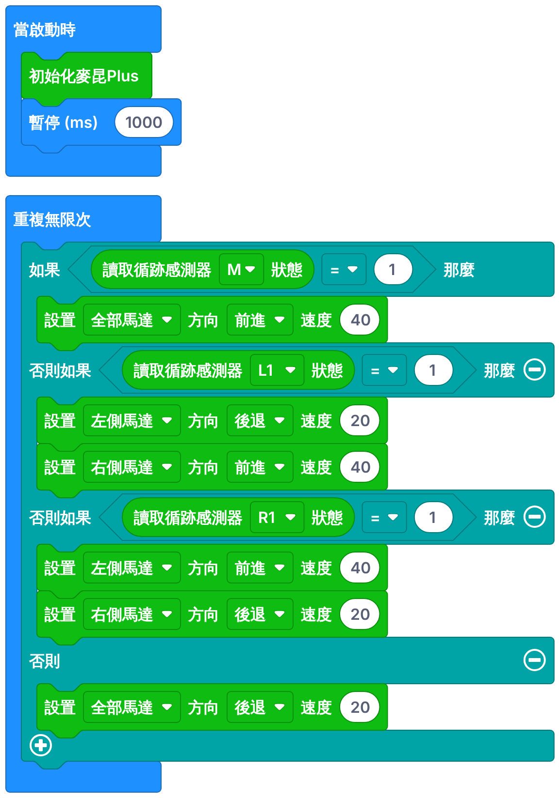

開始之前
今課 1–2 人一組，每組用一部電腦、交一份報告。兩人一組的話，在「組員二」填另一位同學。
完成今課後，你能夠：
- 認出流程圖的 4 個符號，完成上一課巡線程式的流程圖。
- 認識轉彎 3 種方法，用 ③ 優化巡線程式，令小車在 20 秒內走完 8 字線。
本課滿分 50 分：符號練習 5、巡線流程圖 10、測試記錄 10、老師驗收 25（圓滿完成 25／部分完成 15／未完成 5）。
流程圖的 4 個符號
5 分流程圖用符號和箭頭畫出程式的步驟，就像建屋前先畫圖則。
| 符號 | 名稱 | 例子 |
|---|---|---|
| 圓角長方形 | 開始／結束 | 開始（當啟動時） |
| 長方形 | 處理（動作） | 設置馬達、暫停 |
| 平行四邊形 | 輸入／輸出 | 讀取感應器 |
| 菱形 | 判斷 | M ＝ 1 ？（一定有「是」和「否」兩條路） |
練習：這個符號叫什麼？5 分
流程圖示範：自動風扇
自動風扇：太熱就開風扇，不熱就關風扇，而且要不停檢查溫度。用手指沿着箭頭走一次。
- 開始（圓角長方形）。
- 讀取溫度（平行四邊形）：由感應器取得資料，是輸入。
- 溫度 > 28？（菱形）：答「是」走右邊去開風扇；答「否」走下面去關風扇。
- 做完後，箭頭回到「讀取溫度」，不停重複 ＝「重複無限次」。
記住菱形一定有「是」和「否」兩條路；箭頭回到上方就是不停重複。
練習：完成上一課巡線程式的流程圖
10 分左邊是上一課的巡線程式。把上面的卡拖到流程圖的空格（或先按卡，再按空格），完成流程圖，再按「檢查答案」。
提示：菱形放問題（M、L1、R1 ＝ 1？），次序和程式一樣；三個菱形都答「否」，就走到最後的「否則」。
新任務：優化巡線程式，20 秒內走完 8 字線
今堂任務優化上一課的巡線程式，令小車沿 8 字線走完一圈，回到起點，用時 20 秒或以內，全程不脫線。
交叉位：小車走到交叉位時，M 會看到黑線，程式第一個判斷是「M ＝ 1 → 前進」，所以小車會直行穿過，不會轉錯路。
小車轉彎的 3 種方法（以向左轉為例）
只要令左右兩個馬達輸出不同，小車就會轉彎。輸出相差越大，轉得越急。
| 方法 | 左側馬達 | 右側馬達 | 轉得 | 好處 | 壞處 |
|---|---|---|---|---|---|
| ① 一邊慢、一邊快 | 前進 20 | 前進 40 | 最輕 | 車身最順 | 轉得不夠急，急彎會衝出線 |
| ② 一邊停、一邊行 | 停止 | 前進 40 | 中等 | 順，少擺動 | 速度低時推不動；急彎容易脫線 |
| ③ 一邊後退、一邊前進 | 後退 20 | 前進 40 | 最急 | 最穩陣，急彎也跟得到 | 車身會左右擺 |
向右轉就把左右調轉。
今堂用 ③ 一邊後退、一邊前進8 字線的彎位急，③ 轉得最急、最不容易脫線；上一課已經用 ③，今堂只要改數字，一堂內做得到。① 和 ② 留給做得快的組別挑戰。
優化巡線程式：改數字
程式的結構和上一課一樣，只改數字，而且「否則」改為後退：
| 感應器 | 小車要做什麼 | 上一課 | 今課（起步數字） |
|---|---|---|---|
| M ＝ 1 | 直行 | 全部馬達 前進 20 | 全部馬達 前進 40 |
| L1 ＝ 1 | 向左轉 | 左側 後退 10、右側 前進 20 | 左側 後退 20、右側 前進 40 |
| R1 ＝ 1 | 向右轉 | 左側 前進 20、右側 後退 10 | 左側 前進 40、右側 後退 20 |
| 都是 0（否則） | 脫線 | 全部馬達 停止 | 全部馬達 後退 20 |
「否則」由停止改為後退上一課脫線就停車。今課改為後退：小車退回去，感應器會再看到黑線，然後繼續走，不用人手幫忙。

1修改上一課的程式
- 開啟 makecode.microbit.org，打開上一課的專案。如果要開新專案（名稱：
班別_學號_flowbot），先按「擴展」，按下面的「複製」，在搜尋欄按 Ctrl＋V 貼上，按 Enter，選 maqueenPlusV2。 - 直行改成 40。
- 轉彎：後退的一邊改成 20，前進的一邊改成 40。
- 「否則」改成「全部馬達 後退 20」。
2校準、下載、測試
和上一課一樣：校準 → 下載 → 放在 8 字線的起點（黑線在車底正中）→ 開電源。同組一人用手機計時，由起步到回到起點。
3逐步提速，目標 20 秒
走得完之後，直行和轉彎時前進的一邊每次一齊加 10；轉彎時後退的一邊保持大約是一半。左右擺得厲害，就把後退的一邊減 10。每次只改一樣，並記錄秒數。
在地面測試；懸空會令感應器讀到 1，小車會繼續向前。
測試記錄：目標 20 秒
10 分每試一次填一行，把程式裏的數字全部照填，最後一欄會告訴你下一次改什麼。至少記錄 3 次。
| 欄 | 填什麼 |
|---|---|
| 直行 | M ＝ 1 時「全部馬達 前進」的速度 |
| 後退的一邊 | 轉彎時向後轉的馬達速度（向左轉＝左側） |
| 前進的一邊 | 轉彎時向前轉的馬達速度（向左轉＝右側） |
| 否則後退 | 脫線時「全部馬達 後退」的速度 |
出了問題？
| 現象 | 檢查 |
|---|---|
| 在交叉位轉錯路 | 第一個判斷要是「M ＝ 1 → 前進」 |
| 彎位衝出黑線 | 直行減 10；或後退的一邊加 10（轉得更急）；左右有沒有調轉？ |
| 左右擺得很厲害 | 後退的一邊減 10 |
| 脫線後一直後退，回不到黑線 | 否則後退減到 10；放車時黑線要在車底正中 |
| 只會前進，不會修正 | 要用「否則如果」，次序是 M → L1 → R1 |
老師驗收
25 分達到目標（或已盡力）後，請老師來看一次 8 字線，老師會揀選結果。
挑戰（做得快的組別）
試試把轉彎改用 ① 或 ②，看看會不會更快、更順；或者看看用 ③ 最快可以幾秒走完 8 字線。
總結及學習日誌
- 流程圖：圓角＝開始，長方形＝動作，平行四邊形＝輸入，菱形＝判斷。
- 菱形一個接一個 ＝「否則如果」；箭頭回到上方 ＝「重複無限次」。
- 轉彎 3 種方法：一邊慢一邊快、一邊停一邊行、一邊後退一邊前進。
- 今堂用 ③：轉得最急、最穩陣；脫線就後退。車走得穩，就可以開得更快。
學習日誌（不計分）
你們最快幾秒走完 8 字線？直行和轉彎兩邊各用了什麼速度？
成績及交功課
每組下載一份成績報告（兩人一組時檔名有兩個名字），上傳到 Google Classroom／eClass。